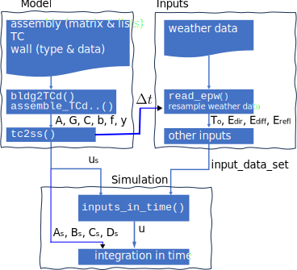

State-space models by using Pandas#
The workflow for thermal analysis by using dm4bem module is presented in figure 1:
Model:
obtain dissasembled thermal circuit from files describing the walls and the thermal circuits (function
bldg2TCd());assemble the thermal circuits (functions
assemble_TCd_matrix()andassemble_lists2matrix());state-space representation from thermal circuit (function
tc2ss()).
Inputs:
get weather data: outdoor temperature and direct, diffuse and reflected solar radiation on tilted surfaces (functions
read_epw()andsol_rad_tilt_surf());define the other inputs, such as indoor temperature set points, auxialiry flow-rates;
Simulation:
prepare the inputs from input description of the state-space (\(u_s\)) and the input data set (function
inputs_in_time());integrate in time by using Euler explicit and implicit methods.

Figure 1. Work flow for building simulation by using
dm4bemmodule.